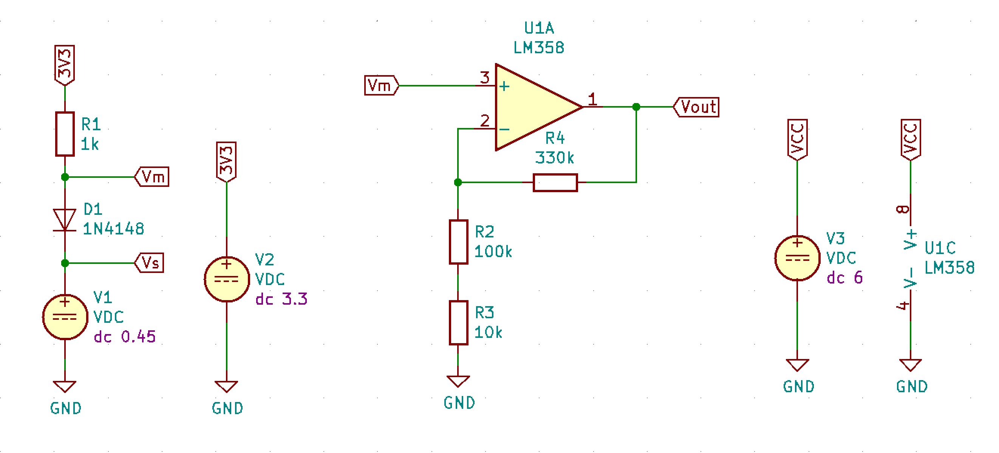
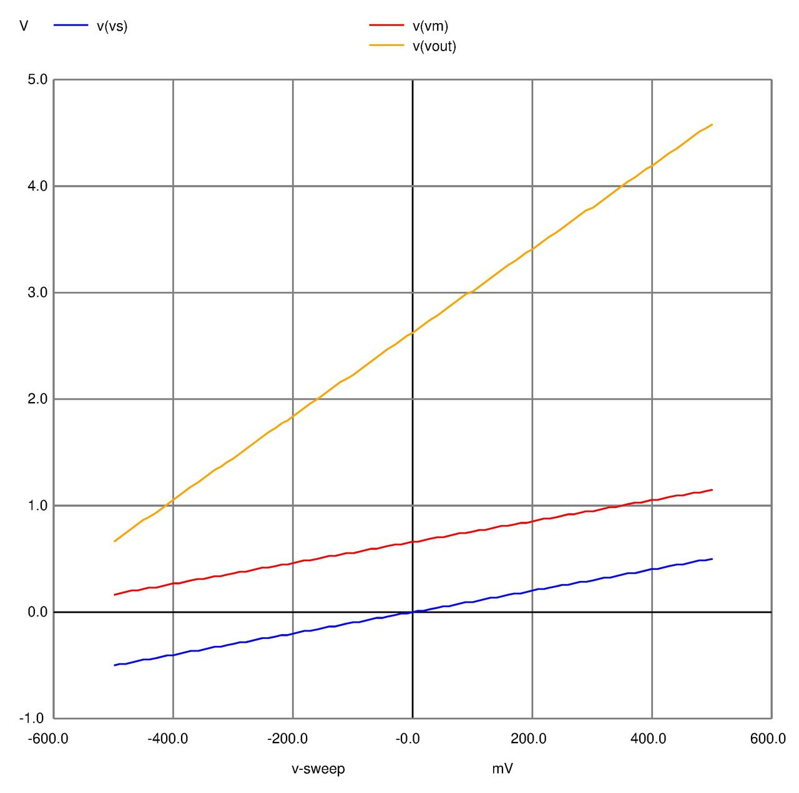

Simulación de circuito de lectura de tensión
Para un proyecto de robótica que estoy comenzando, basado en versiones de los rover marcianos de NASA, necesitaba diseñar un circuito para hacer la lectura de la corriente que circula por un motor controlado mediante un driver Allegro A4953. Este driver tiene un pin LSS en el que se puede conectar una resistencia $R_S$ para medir la corriente del motor, que se obtiene simplemente dividiendo la tensión $V_S$ en la resistencia por el valor de la misma:
$$ I_{motor} = \frac{V_S}{R_S} $$
Para diseñar el circuito decidí dibujar el esquema en KiCad y simularlo con ngspice.

La simulación muestra la gráfica siguiente para los parámetros $V_S$, $V_M$ y $V_{OUT}$ cuando $V_S$ se hace variar entre $-0.44V$ y $+0.44V$.

La simulación devuelve los siguientes valores de tensión para los principales puntos de funcionamiento:
| $V_S$ | $V_M$ | $V_{OUT}$ |
|---|---|---|
| $-0.44$ | $0.23$ | $0.90$ |
| $0.00$ | $0.66$ | $2.63$ |
| $+0.44$ | $1.09$ | $4.35$ |
Procedimiento del cálculo
La hoja de datos da una expresión para calcular $R_S$:
$$ I_{max} = \frac{V_{ref}}{A_v R_S} $$
siendo $I_{max}$ la corriente máxima del motor, $V_{ref}$ la tensión aplicada en el pin VREF (se usarán 5V) y $A_v$ una ganancia que en la hoja de datos se define con valor 10. Con esto, se puede calcular el valor de $R_S$ adecuado para este caso:
$$ R_S = \frac{V_{ref}}{A_v I_{max}} = \frac{5V}{10 \times 1.1A} = 0.45 \Omega $$
Según las especificaciones del driver, el valor máximo admisible en LSS, en valor absoluto, es de $0.5 V$. Eligiendo $R_S= 0.4 \Omega$, la tensión máxima que se tendrá en LSS es, en valor absoluto:
$$ V_S = 0.4 \Omega \times 1.1A = 0.44V < 0.5V $$
Como resultado, en LSS se tendrán tensiones en el rango $(-0.44V, +0.44V)$ (línea azul en la gráfica) en función de la corriente que circula por el motor.
Este rango de tensiones será leído mediante el conversor analógico/digital (ADC) de un Arduino Nano, que registra tensiones entre $0$ y $5V$ con una resolución de 10 bit (1024 cuentas), por lo que es necesario adaptar estas tensiones a valores adecuados para tener una resolución decente en la lectura. Idealmente, se intentaría usar todo el rango $(0V, 5V)$ del ADC, pero conviene dejar márgenes de seguridad para asegurar que no se alcanzan los máximos y para evitar que el amplificador operacional que hará la adaptación trabaje en los extremos ($0V$ y $VCC$), lo que puede producir valores erróneos.
La adaptación de tensiones se realiza usando un amplificador operacional LM358 configurado como amplificador no inversor. En esta configuración, la ganancia es positiva, por lo que el primer obstáculo está en transformar el rango de tensiones en LSS para que todas sean positivas. Para ello se coloca en serie con la tensión $V_S$ un diodo alimentado desde el pin de $3.3V$ del Arduino que sumará su tensión de codo, unos $0.66V$ de promedio, al valor de $V_S$, por lo que se pasa a tener un rango de tensiones $(Vd-Vs, Vd+Vs) = (0.23V, 1.09V)$, todas positivas. Estas tensiones, $V_M$ en el esquema y en la gráfica, se pasan como entrada a la etapa amplificadora para adaptarlas al rango $(0V, 5V)$ del ADC.
La ganancia del amplificador no inversor viene dada por
$$ A_v = 1 + \frac{R_4}{R_2+R_3} $$
y la tensión en la salida será
$$ V_{OUT} = A_v V_M $$
Según las especificaciones del LM358, en la salida de este operacional se pueden obtener tensiones entre $0V$ y $VCC-1.5V$, por lo que si fijamos un valor máximo aproximado de tensión en el ADC de 4.5V se tiene que VCC debe ser igual a 6V, que es una de las tensiones que se va a usar en la placa definitiva. Ese valor máximo también da un margen de seguridad en la tensión medida en el ADC.
Para obtener 4.5V en la salida necesitamos una ganancia de tensión igual a
$$\frac{4.5V}{1.09V} = 4.13 = 1 + \frac{R_4}{R_2+R_3}$$
por lo que la relación $\frac{R_4}{R_2+R_3}$ tiene que ser menor o igual a $3.13$ para no sobrepasar los $4.5V$. Seleccionando $R_2+R_3 = 110 \: k \Omega$ y $R_4 = 330 \:k \Omega$ se obtiene una relación de $3$ y una ganancia $A_v = 4$.
Con esta ganancia el rango de tensiones en la salida del amplificador será
$$ V_{OUT} = (A_v \times 0.23, \: Av \times 1.09) = (0.90V, \: 4.35V) $$
que se corresponden con valores del ADC de $(184, 890)$, utilizando un $69 \%$ del rango del ADC.
Resolución en corriente del ADC
Se puede calcular la resolución de la medida de corriente por el motor, es decir cuánto cambia la corriente por cada cuenta del ADC.
La tensión de salida del amplificador es:
$$ V_{OUT} = A_v(R_S i_S + V_d) $$
siendo $i_S$ la corriente que circula por $R_S$ (se desprecia la corrientes que circula por el diodo, del orden de $1 mA$) y $V_d$ la tensión de codo en el diodo.
Expresado como cuentas del ADC:
$$ N = \frac{1024}{5} V_{OUT} $$
Si tomamos dos medidas consecutivas del ADC, $N1$ y $N2 = N1 + 1$:
$$ N2 - N1 = \frac{1024}{5} Av (R_S i_2 + V_d) - \frac{1024}{5} Av (R_S * i_1 + V_d) $$
Operando:
$$ 1 = \frac{1024}{5} Av R_S (i_2 - i_1)
$$
Y se tiene:
$$ (i2 - i1) = \Delta i = \frac{5}{1024 \: A_v R_S} = 3.05 \dfrac{mA}{cuenta} $$
Es decir, se tiene una resolución en la medida de corriente que circula por el motor de unos $3 \: mA$.